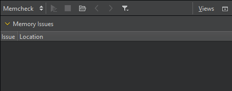

Detect memory leaks with Memcheck
With the Memcheck tool in Valgrind's Tool Suite, you can detect problems that are related to memory management in applications. Use the tool together with the GDB debugger. When a problem is detected, the application is interrupted and you can debug it.
Note: You can install and run Memcheck locally on Linux. You can run it on a remote host or device from any computer. On Windows, you can use the Heob heap observer to receive similar results.
After you download and install Valgrind tools, you can use Memcheck from Qt Creator.
To detect memory leaks in applications:
- Go to the Projects mode, and select a debug build configuration.
- In the mode selector, select Debug > Memcheck.

- Select
 to start the application.
to start the application. - Use the application to analyze it.
- Select
 to view the results of the analysis in Memory Issues.
to view the results of the analysis in Memory Issues.
View memory issues
While the application is running, Memcheck does the following:
- Checks all reads and writes of memory.
- Intercepts calls that allocate or free memory or create or delete memory blocks.
You can see the results when you stop Memcheck.
Select a line to see the place where a memory leak occurred and a stack trace that shows what caused it.
As an alternative to collecting data, select  to load an external log file in XML format into the Memcheck view.
to load an external log file in XML format into the Memcheck view.
Move the mouse on a row to view more information about the function.
To move between rows, select  or
or  .
.
To filter the results, select  , and then select the types of issues to display in the view. You can view and hide definite and possible memory leaks, uninitialized values, invalid calls to
, and then select the types of issues to display in the view. You can view and hide definite and possible memory leaks, uninitialized values, invalid calls to free(), and external errors.
For more information about using Memcheck, see Interpreting Memcheck's Output in the Valgrind documentation.
See also How To: Analyze, Profile function execution, Run Valgrind tools on external applications, Specify Valgrind settings for a project, Analyzers, Valgrind Callgrind, Valgrind Memcheck, and Analyzing Code.